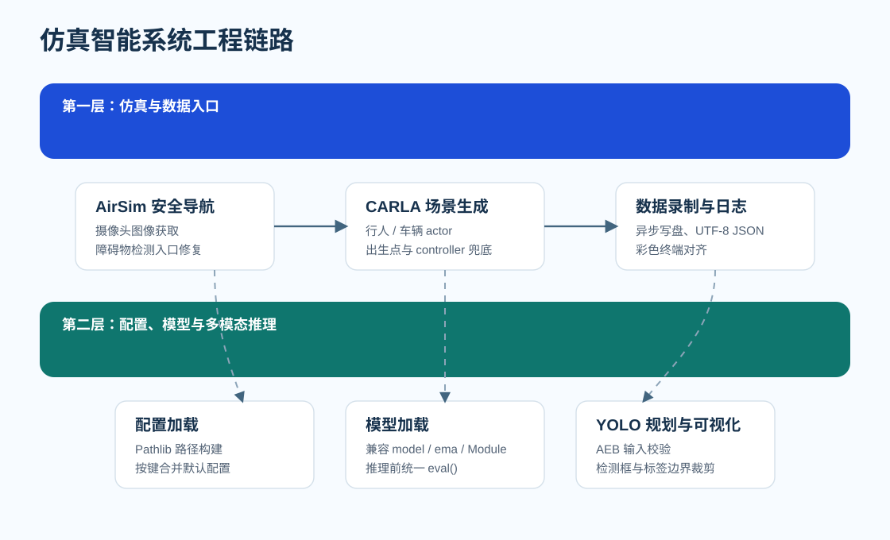
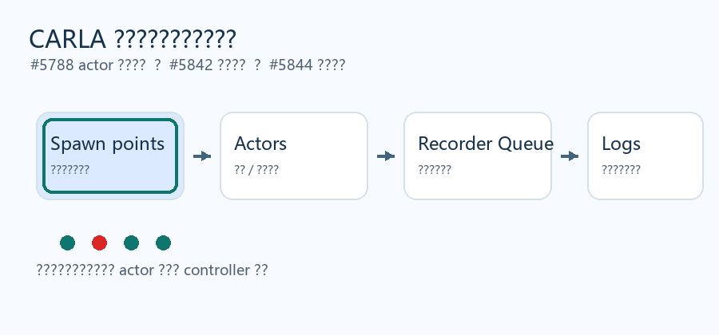
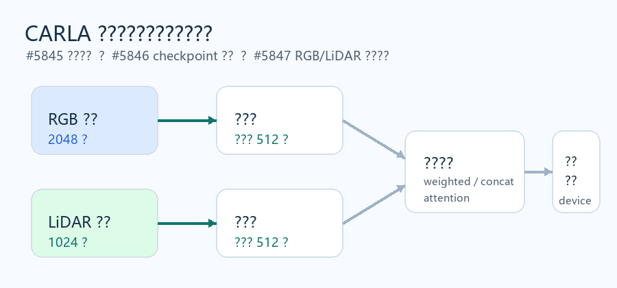
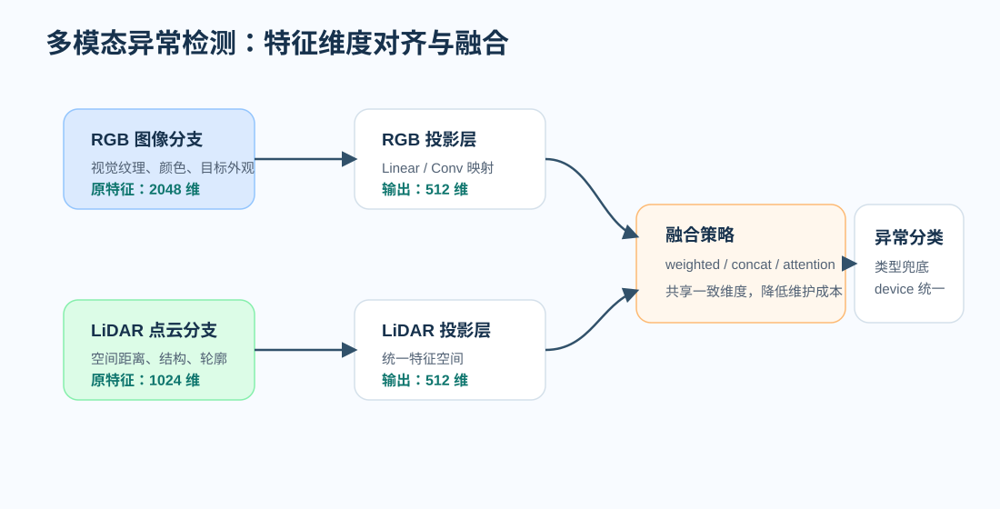
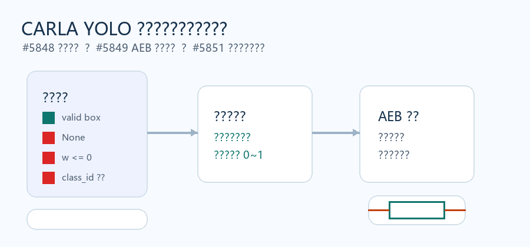

OpenHUTB/nn 开源贡献报告：面向仿真智能系统的 11 次 PR 实践
摘要
本文档详细记录了在《基础软件和开源系统》课程中，围绕OpenHUTB/nn 仓库的贡献工作。与单点功能开发不同，本次贡献更偏向对既有仿真智能系统进行工程化加固：围绕 CARLA、AirSim、YOLO 规划器、多模态检测器和基础 CNN 训练脚本，持续修复路径、配置、模型加载、异步写盘、日志记录、输入校验和可视化边界处理等问题。
本轮贡献累计修改 11 个文件，新增 344 行、删除 137 行。整体目标可以概括为一句话：让仓库中的自动驾驶、无人机与神经网络示例在异常配置、脏输入、跨平台路径和仿真资源收尾场景下更稳定、更容易复现，也更适合后续同学继续扩展。
1. 项目背景与立项依据
OpenHUTB/nn 是面向神经网络教学、仿真实验和智能系统实践的开源仓库，覆盖基础神经网络、CARLA 自动驾驶、AirSim 无人机控制、MuJoCo 机器人仿真等方向。仓库内容丰富，但也意味着不同模块之间依赖复杂：有的模块依赖仿真器，有的模块依赖深度学习框架，有的模块需要实时处理传感器数据，还有的模块需要写入日志、保存图像或加载 checkpoint。
在这种工程场景中，真正影响使用体验的往往不是“大算法”，而是一些容易被忽略的细节：
- 路径是否跨平台；
- YAML 为空时是否能正常加载；
torch.load()返回不同格式时是否能解析；- CARLA actor 生成失败时是否能安全退出；
- 图像保存失败是否会被发现；
- 检测框字段缺失或越界时，规划器和可视化模块是否会崩溃；
- 日志 writer 关闭后是否还会静默写入失败。
因此，本次贡献的核心定位是：面向仿真智能系统的工程稳健性优化。
2. 贡献目标
本次开源实践主要围绕以下目标展开：
| 目标 | 说明 | 对应模块 |
|---|---|---|
| 提升基础模型泛化能力 | 为 CNN 训练流程补充 L2 正则化，降低过拟合风险 | chap05_CNN |
| 修复无人机安全导航入口 | 恢复 AirSim 摄像头图像获取与障碍物检测流程 | safe_navigation |
| 增强 CARLA 场景运行稳定性 | 优化 actor 生成、录制收尾、日志统计 | carla_multisensor_platform |
| 增强自动驾驶视觉导航鲁棒性 | 改进配置加载、模型权重解析、多模态融合 | carla_auto_vision_navigator |
| 增强 YOLO 规划器边界处理 | 对日志、AEB 规划和可视化绘制增加异常输入兜底 | carla_yolo_planner |
3. 总体技术架构
从系统角度看，这 11 个 PR 可以分成三层：底层是基础训练与仿真入口，中层是 CARLA 场景、数据、模型和日志工具，上层是 YOLO 规划器与可视化输出。

图 1：从仿真输入到模型推理、规划决策和可视化输出的工程链路
这条链路中的关键思想是：不要假设输入永远干净，也不要假设环境永远完整。因此，多个 PR 都采用了相似的优化策略：
- 对路径使用
pathlib.Path统一管理； - 对配置值设置合理边界；
- 对空配置、缺失字段、非法检测框做跳过或兜底；
- 对异步写盘和日志关闭流程增加明确状态；
- 对模型加载增加 checkpoint 结构兼容；
- 对跨设备推理统一迁移到目标 device。
4. 重点项目一：CARLA 多传感器平台稳健性优化
4.1 项目概述
CARLA 多传感器平台负责构建自动驾驶仿真场景，涉及行人、车辆等 actor 的生成，也涉及图像、元数据和日志的录制保存。该模块处在仿真系统的底座位置，一旦 actor 生成失败、数据保存遗漏或日志统计异常，上层感知与规划模块都会受到影响。
本项目线包含 3 个 PR：
- #5788：优化
environment.py的 actor 生成逻辑； - #5842：优化
DataRecorder.py的录制收尾与路径管理； - #5844：优化
logger.py的车辆统计与终端输出。

图 2：CARLA 平台 actor 生成、录制队列收尾与日志统计优化示意动图
4.2 Actor 生成逻辑优化
在 CARLA 场景中，行人和车辆并不一定总能按预期生成。出生点不足、导航点无效、生成碰撞、controller 绑定范围过大，都会造成场景初始化阶段的不稳定。PR #5788 针对这些问题进行了修复。
| 问题场景 | 原风险 | 优化方案 |
|---|---|---|
| 行人出生点不足 | 空列表或数量不匹配导致异常 | 仅基于有效导航点生成行人 |
| 行人生成失败 | 后续 controller 绑定错位 | 只为本次成功生成的行人创建 AI controller |
| 车辆出生点重复 | 重复抽到同一位置导致生成失败 | 先打乱出生点，再按目标数量截取 |
| 无有效生成结果 | 后续流程继续处理空数据 | 直接安全返回 |
这类修改看起来不大，但对仿真项目很关键。它让场景初始化从“理想条件下能跑”变成“资源不足或部分失败时也能稳定退化”。
4.3 数据录制与异步写盘收尾
PR #5842 重点处理 DataRecorder.py 中的数据保存问题。数据录制模块一般运行在主仿真循环旁边，如果停止录制时后台队列还没写完，就可能出现最后几帧丢失；如果 cv2.imwrite() 失败但没有检查返回值，就会造成“看起来保存成功，实际文件不存在”的静默失败。
核心改进如下：
- 使用
pathlib.Path管理输出目录、图片目录、元数据目录和会话目录； - JSON 写入统一指定 UTF-8 编码；
- 停止录制时先等待保存队列处理完成，再结束后台线程；
- 检查
cv2.imwrite()的返回值，图像保存失败时记录错误日志； - 对
vehicle_transform使用深拷贝，避免异步线程拿到被后续更新覆盖的数据。
4.4 终端日志与车辆统计优化
PR #5844 优化了车辆统计和终端日志展示。主要改动包括：
- 使用平方距离比较替代循环中的开方计算；
- 修复
Vehicles nearby在边界情况下可能显示为负数的问题； - 对 ANSI 彩色转义序列计算可见长度，避免彩色终端输出错位；
- 清理未使用导入，让日志模块更聚焦。
4.5 小结
这一组 PR 的价值在于提升 CARLA 仿真底座的可靠性：actor 生成更稳，数据保存更可靠，日志展示更清楚。它们不直接改变算法效果，但能显著降低后续调试成本。
5. 重点项目二：CARLA 自动驾驶视觉导航模块优化
5.1 项目概述
carla_auto_vision_navigator 面向自动驾驶视觉导航场景，包含配置加载、模型加载、多模态异常检测等逻辑。该模块的典型难点是：配置项较多、模型 checkpoint 格式不统一、RGB 与 LiDAR 特征维度不一致、CPU/GPU 设备可能混用。
本项目线包含 3 个 PR：
- #5845：优化
config.py的配置加载与路径处理； - #5846：优化
model_loader.py的模型加载稳健性； - #5847：优化
object_detector.py的融合与配置兜底。

图 3：配置加载、模型加载与 RGB/LiDAR 特征对齐融合示意动图
5.2 配置加载：从全局覆盖到按键合并
PR #5845 解决的是配置初始化阶段的稳定性问题。原始配置逻辑直接使用 globals().update(...) 合并自定义配置，这种方式虽然简单，但会带来一个风险：用户只想覆盖字典中的一个字段，却可能把整个默认配置覆盖掉。
优化后的思路是：
- 使用
pathlib.Path构建项目根目录和模型路径； - YAML 文件读取显式使用 UTF-8；
- 空 YAML 文件返回空配置而不是触发异常；
- 字典配置采用按键合并，只覆盖用户显式提供的字段；
- 补充
torch导入，避免device初始化阶段缺少依赖。
5.3 模型加载：兼容不同 checkpoint 结构
PR #5846 重点增强模型加载器。实际项目中，torch.load() 的返回结果可能有多种形式：
- 直接保存的
torch.nn.Module； - 包含
model键的 checkpoint； - 包含
ema键的 checkpoint； - 仅包含参数字典的结构。
为降低推理前的静态风险，该 PR 增加了 checkpoint 解析逻辑，并将默认兜底模型改为基于 AdaptiveAvgPool2d 的分辨率无关结构。这样即使输入图像尺寸变化，也不会强依赖固定展平维度。
5.4 多模态融合：统一 RGB 与 LiDAR 特征空间
PR #5847 是这一组中最接近“模型结构”的改动。原融合逻辑中，RGB 特征为 2048 维，LiDAR 特征为 1024 维，默认 weighted 融合方式无法直接相加。该 PR 为两路特征增加投影层，统一映射到 512 维，再进行融合。

图 2：RGB 与 LiDAR 特征对齐后的多模态异常检测流程
核心改进包括：
- RGB 特征与 LiDAR 特征分别通过投影层映射到 512 维；
weighted、concat、attention三种分支共用更一致的特征空间；- 当配置中缺少
anomaly_types时，从UNSTRUCTURED_SCENES汇总异常类型； - 初始化末尾统一调用
self.to(self.device)，减少 CPU/GPU 混放风险。
5.5 小结
这一组 PR 的重点是让自动驾驶视觉导航模块更像一个可复用组件：配置更安全，模型加载更兼容，多模态融合更合理，设备管理更明确。
6. 重点项目三：CARLA YOLO 规划器边界场景增强
6.1 项目概述
carla_yolo_planner 更靠近系统上层，主要处理目标检测结果、自动紧急制动规划、TensorBoard 日志和画面可视化。相比配置和模型加载，这里更容易遇到“运行时脏数据”：检测结果为空、检测框字段不足、类别 ID 越界、图像尺寸配置异常、安全区比例越界等。
本项目线包含 3 个 PR：

图 5：YOLO 规划器检测输入过滤、AEB 判断与可视化裁剪示意动图
6.2 TensorBoard 日志写入优化
PR #5848 对日志工具做了几个关键修补：
- 日志目录统一使用
pathlib.Path； fps、detection_count、avg_confidence在写入前做显式规范化；- 即使当前帧没有检测目标，也写入平均置信度，避免 TensorBoard 曲线断点；
- writer 关闭后继续写入会显式抛错，避免静默失败；
- 关闭前调用
flush()，提高日志落盘完整性。
6.3 AEB 规划器输入校验
PR #5849 面向自动紧急制动规划器增加输入防护。AEB 逻辑依赖相机尺寸、安全区比例和检测框面积，如果配置异常或检测框字段不合法，就可能造成错误判定。
优化内容包括：
CAMERA_WIDTH和CAMERA_HEIGHT增加最小值保护；SAFE_ZONE_RATIO和COLLISION_AREA_THRES收敛到0.0 ~ 1.0；- 检测结果为
None、字段数量不足、数值无法转换或宽高非正数时直接跳过； - 清理未使用的
numpy导入。
6.4 可视化绘制边界处理
PR #5851 解决的是可视化阶段的边界问题。可视化模块虽然不直接参与规划，但如果绘制阶段因为单条异常检测框报错，整个运行链路仍然会中断。
| 输入问题 | 风险 | 处理方式 |
|---|---|---|
| 安全区比例越界 | 安全区线画到图像范围外 | 收敛到 0.0 ~ 1.0 |
| 检测项为空 | 解包或类型转换失败 | 跳过该检测项 |
| 检测框宽高非正 | 绘制无效矩形 | 跳过该检测项 |
class_id 越界 |
类别列表索引异常 | 退化为默认标签 |
| 标签文字超出图像边界 | 绘制位置异常 | 统一裁剪坐标 |
6.5 小结
这一组 PR 的核心价值是“让规划器和可视化层不被脏数据击穿”。在真实检测系统中，模型输出并不总是干净的，边界处理越扎实，系统越适合长时间运行。
7. 其他贡献：基础模型与 AirSim 安全导航
7.1 CNN 高级正则化技术（PR #5187）
PR #5187 修改 src/chap05_CNN/CNN_pytorch.py，在训练函数的优化器初始化中加入 weight_decay=1e-4，为 CNN 模型补充 L2 正则化能力。该改动与已有 Batch Normalization 结构配合，有助于降低过拟合风险并提升训练稳定性。
7.2 AirSim 安全导航入口修复（PR #5649）
PR #5649 修改 src/safe_navigation/run_main.py，修复摄像头检测流程中的语法问题，并补全图像获取与障碍物检测调用：
- 删除导致 Python 解析失败的非法字符；
- 在获取摄像头信息后调用
get_camera_image(client)； - 图像获取成功时调用
detect_obstacles(img)； - 图像获取失败时保留模拟图像兜底逻辑；
- 使用
compile()完成静态语法检查。
8. PR 提交记录
| PR | 修改文件 | 新增/删除 | 项目线 | 主题 |
|---|---|---|---|---|
| #5187 | src/chap05_CNN/CNN_pytorch.py |
+2 / -2 | 基础模型 | 高级正则化技术 |
| #5649 | src/safe_navigation/run_main.py |
+9 / -4 | AirSim | 完善安全导航主流程 |
| #5788 | src/carla_multisensor_platform/utils/environment.py |
+37 / -25 | CARLA 平台 | 优化 actor 生成逻辑 |
| #5842 | src/carla_multisensor_platform/utils/DataRecorder.py |
+34 / -27 | CARLA 平台 | 优化录制收尾与路径管理 |
| #5844 | src/carla_multisensor_platform/utils/logger.py |
+32 / -11 | CARLA 平台 | 优化车辆统计与终端输出 |
| #5845 | src/carla_auto_vision_navigator/config.py |
+23 / -9 | 视觉导航 | 优化配置加载与路径处理 |
| #5846 | src/carla_auto_vision_navigator/utils/model_loader.py |
+33 / -11 | 视觉导航 | 优化模型加载稳健性 |
| #5847 | src/carla_auto_vision_navigator/src/object_detector.py |
+42 / -16 | 视觉导航 | 优化融合与配置兜底 |
| #5848 | src/carla_yolo_planner/utils/logger.py |
+23 / -12 | YOLO 规划器 | 优化日志写入稳健性 |
| #5849 | src/carla_yolo_planner/utils/planner.py |
+33 / -8 | YOLO 规划器 | 优化输入与配置边界处理 |
| #5851 | src/carla_yolo_planner/utils/visualization.py |
+76 / -12 | YOLO 规划器 | 优化可视化绘制边界处理 |
9. 测试与验证
本轮贡献以工程稳健性修复和静态逻辑优化为主，验证方式包括：
- 在 Windows 11 环境下完成修改和 diff 复核；
- 对 AirSim 安全导航脚本使用
compile()进行 Python 语法静态检查； - 对路径、配置、日志、检测输入等边界场景进行代码级兜底设计；
- 对未配置完整 CARLA 或 AirSim 仿真环境的模块，保留静态优化说明，不夸大运行验证范围。
需要说明的是，CARLA 和 AirSim 的完整运行依赖较重，部分 PR 没有执行完整仿真场景测试。本次贡献的重点是让代码在“异常输入”和“资源收尾”场景下更可靠，为后续运行测试和功能扩展打基础。
10. 工作总结
本次 11 个 PR 的共同特点是：围绕系统真实使用中的脆弱点进行小步、聚焦、可合并的改进。它们没有引入大规模重构，却在多个关键位置补上了工程防护：
- 训练侧：通过 L2 正则化增强基础 CNN 泛化能力；
- 仿真入口侧：修复 AirSim 主流程语法和检测入口；
- CARLA 场景侧：提升 actor 生成、数据录制和日志统计稳定性；
- 模型侧：增强配置合并、checkpoint 加载和多模态融合兼容性；
- 规划与可视化侧：增强脏检测数据、异常配置和越界绘制的处理能力。
从开源协作角度看，本次实践也走通了“发现问题 - 分支修改 - PR 描述 - 静态验证 - 合并入库”的完整流程。每个 PR 聚焦一个文件或一个小模块，便于评审，也降低了对主仓库的影响范围。
11. 后续优化方向
后续可以基于本次贡献继续推进以下工作：
- 为 CARLA 多传感器平台补充最小可运行 demo，验证 actor 生成、录制保存和日志统计的完整链路；
- 为
DataRecorder、model_loader、planner和visualization增加单元测试，覆盖空输入、非法检测框、路径不存在、writer 重复关闭等场景； - 在完整 CARLA 环境下验证
object_detector.py的 RGB/LiDAR 融合维度对齐效果； - 将路径处理、配置合并、日志关闭等通用模式沉淀为项目工具函数；
- 对 YOLO 规划器增加仿真回放数据，评估 AEB 决策在不同检测框质量下的稳定性。